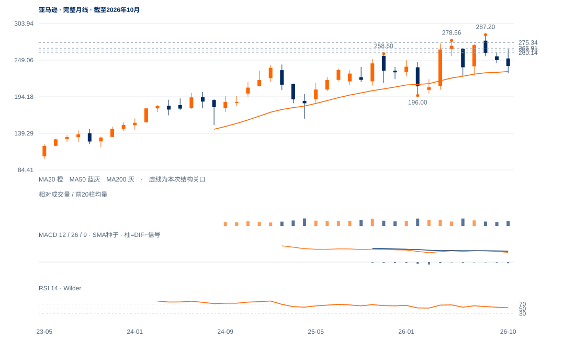

修复承接待验
未来1—5日偏向高位拉锯，264.18—266.91上缺口承接决定能否再次向275.34推进。
未来1—5日偏向高位拉锯，264.18—266.91上缺口承接决定能否再次向275.34推进。
未来2—6周偏向258.60—287.20内高位整理。先守264.18，原275.34两日条件通过后才支持再试278.56—287.20；跌破260.14则此次修复保持失败。
未来1—3个月长期仍有偏强基础，但需周收持续站稳287.20才能开启明确新扩张。若退回258.60以下且反抽失败，245.25、232.12月度均衡及225—226下沿依次成为回撤参照。

展开图表 ↗2022低81.69、2025年4月161.38、今年2月196的较高大谷维持长期背景。10月月收240.35接近10月均衡245.25，当前267.44已回其上，也越过2025高258.60；但5月278.56与8月287.20上沿仍在，距离供给比距离区间低沿更近。
6月225.55、7月226.16附近形成下沿，8月287.20后进入宽区间。11月上缺口264.18—266.91尚未完全回补，支持反弹承接；275.34、274.87、273.60连续上试高点降低，且量能递减，说明靠近上沿时需求尚未扩展。供应减少与需求退缩两种解释仍待跟进区分。
225—287宽区间的上部供应正在被测试。264.18—266.91上窗口仍有承接，275.34上方持续推进才支持再次试高。
11月9日上缺口264.18—266.91截至12日尚未完全回补，现收267.44仍在其上；原260.14受损线也未触发。20/50/200日线均在下方。
9日高275.34、11日高274.87、12日高273.60，上方推进连续减弱；12日上影占日幅88.7%，收盘位置3.7%。
近三日量比约0.78/0.75/0.68；可能是供应不多，也可能是需求退缩。20日OBV方向余额仅约0.005，尚无足够依据把高位停留直接命名为吸收。
原275.34连续两日完整收盘确认不变；不以当日盘中再试代替保持。
日收低于264.18先损害上缺口承接；原260.14日收条件继续保留。
上缺口与旧高258.60仍守住，缩量可能来自供应稀少；一旦275.34上方出现持续推进，需求衰减的解释会被反证。
| 周期 | 最后完整柱 | 图示柱数 | RSI14 | ATR14 | MACD柱 |
|---|---|---|---|---|---|
| 日线 | 2026-11-12 | 185 | 58.17824 | 9.30815 | 1.92004 |
| 周线 | 2026-11-06 | 156 | 53.97017 | 17.49811 | -1.65224 |
| 月线 | 2026-10-30 | 96 | 54.03392 | 31.15378 | -1.23807 |
美股价格拆股调整、不含分红再投资。完整周线至11月6日；11月进行中。指数成交量与全成分广度受限。